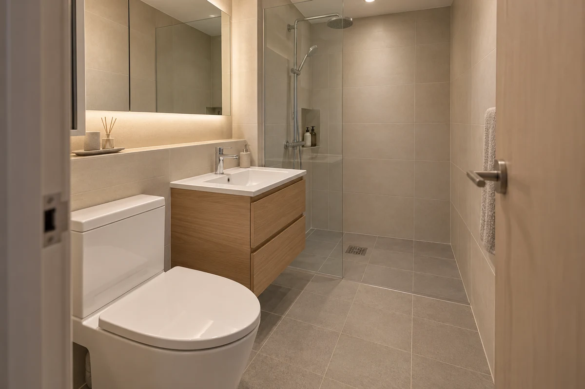

단가는 과거 견적에서 추정한 값입니다. 고객에게 확정 금액으로 안내하지 마세요.
BATHROOM, MADE CLEAR우리 집 욕실,
우리 집 욕실,
하나씩 함께
정해 볼까요?
마음에 드는 분위기부터 필요한 타일 수량까지.
자재값과 시공비를 나눠, 이해하기 쉬운 견적을 만듭니다.

01 / WARM BEIGE매일의 시작이 편안하도록
01 / YOUR STYLE
어떤 분위기가 좋으세요?
스타일은 참고용입니다.
타일 규격과 가격은 아래에서 따로 정합니다.
추정 단가가 남아 있어 앱 전송을 보류합니다. 선택한 항목의 추정 단가를 실제 판매 단가로 직접 확인·입력해 주세요.
상담 견적을 앱으로 보냈습니다. 앱 탭으로 돌아가 불러오세요. 앱이 열려 있지 않다면 앱 열기 →
01 / 상담
원하는 모습 이야기하기
스타일과 불편했던 점을 함께 정리합니다.
02 / 실측
보이지 않는 부분 확인하기
배관·배수·바탕 상태와 공사 범위를 확인합니다.
03 / 견적
품목과 금액에 합의하기
제품·수량·포함 사항을 확인한 뒤 진행합니다.